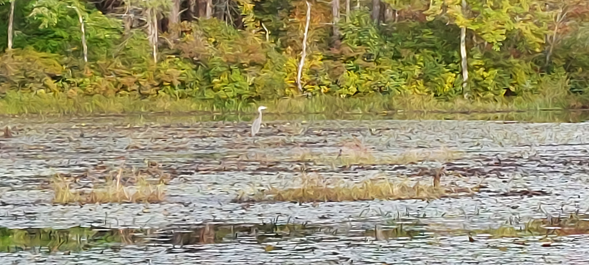
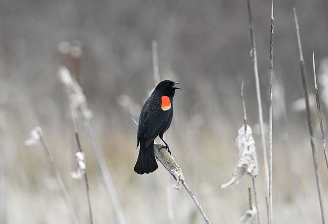
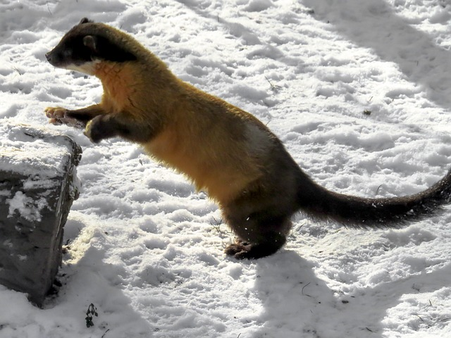
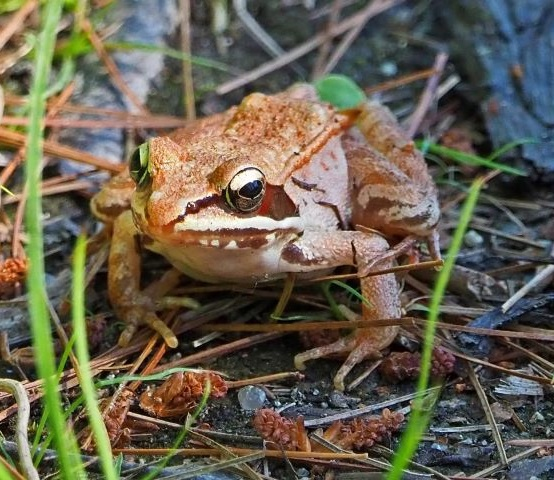
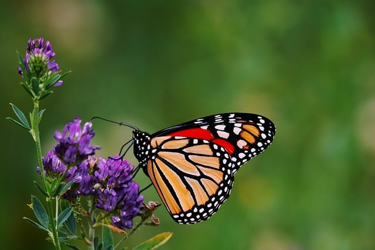

Wildlife
The Refuge is home to a wide array of wildlife, and serves as a stopover for many migratory species as well.
To ensure the safety and protection of the wildlife, plants, and their habitats, no picking or disturbing of the wildlife or vegetation is allowed and the use of drones is prohibited.
Photography of both the scenery and wildlife is encouraged!
Birds

Birds both big and small make the Refuge their home, whether year round or as part of their migration.
Year round residents include Red-Winged Blackbirds, Black-Capped Chickadees, Northern Cardinals, Wild Turkeys, Mute Swans, Barred Owls and many more!
Many waterfowl migrate to the refuge area for mating season and rearing their young, such as Great Blue Herons, Wood Ducks and Canada Geese.
Other migratory birds who temporarily reside in the refuge ecosystem include songsters like Warblers and Wood Thrushes and raptors such the Broad-winged Hawks.

Many different species of mammals live, hunt, and even build in the refuge.
Most are shy and can be hard to find, but with patience, quiet and a little luck you can spot some of these furry residents.
Small mammals such as Chipmunks and Red Squirrels can are some of the most likely to be seen as they scurry through the brush.
While the handiwork of Beavers can Muskrats can be seen in many parts of the refuge, the animals themselves generally only come out at dusk and dawn.
Larger mammals such as Fishers, White-Tailed Deer and Black Bears can sometimes be spotted, but usually do their best to avoid people.
In the winter, Weasels and Snowshoe Hares change their fur color to camouflage in the snow.

As a woodland watershed and wetland, the refuge is an ideal home for a number of amphibians and reptiles.
Most of these animals are dormant in the winter, but can be found in abundance in other seasons.
On warm, sunny days it is a common sight to see Painted Turtles basking on rocks and logs in Puffer Pond.
You may also come upon a Garter Snake or Northern Water Snake warming up near a trail. Don't be alarmed, they are non-venomous and will likely slither off at your approach.
Many different species of frogs emerge in Spring to begin their mating rituals, which can produce quite a chorus as the sun begins to set.
These include Spring Peepers, Northern Leopard Frogs, Gray Tree Frogs, and even Wood Frogs - which are known for their impressive ability to almost completely freeze in winter before thawing out in spring.

Insects are an important part of the ecosystem at the refuge, providing food for many other species of wildlife
and acting as pollinators for a variety of native plants.
An impressive diversity of beetles and grasshoppers can be found throughout the refuge.
They make up a tasty menu for many of the refuge's birds, fish, and bats.
On warmer mornings and evenings, Mosquitoes can be a nuiscance for visitors, but they are also an important food for many frogs and bats.
Pollinators, such as the Monarch Butterfly, help keep the refuge's plant life thriving.